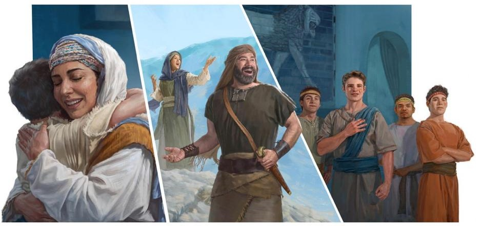
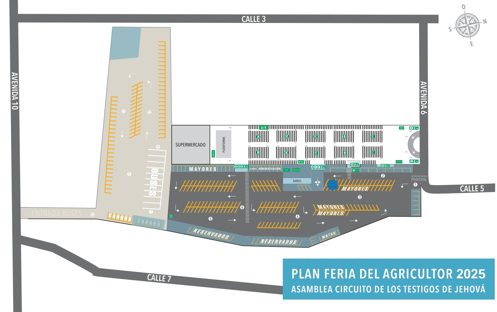

SERVIMOS JUNTOS, CON AMOR
Programa de la asamblea de circuito 2026-2027 (con el superintendente de circuito)
“El que confía en Jehová es feliz” — Proverbios 16:20.
Acomodadores — Equipo del capitán Roy Azofeifa
Fecha programada según DC-85: 22 de noviembre de 2026
Feria del Agricultor El Generaleño, Pérez Zeledón, Costa Rica

Bienvenido. Consulta tu turno, encuentra tus áreas y ten a mano los documentos del equipo.
CADA HERMANO, CADA ASIGNACIÓN
Mi turno y equipo
Toca un nombre para ver sus áreas.
ORIENTACIÓN EN EL RECINTO
Croquis y áreas
● Ubicación confirmada en el plano de referencia ◌ Por confirmar
Usa + para leer las etiquetas y desplaza el plano con el dedo o las barras. Puedes ampliar también con el gesto del navegador.

BIBLIOTECA DEL EQUIPO
Documentos
EL ESPÍRITU DE NUESTRO SERVICIO
Sirvamos con amor: 10 recordatorios para los acomodadores
Que todos se sientan bienvenidos, atendidos y seguros, reflejando el amor cristiano.
Resúmenes prácticos, no citas textuales oficiales. No sustituyen la lectura del documento original.
AYUDA Y COMUNICACIÓN
Cuidémonos y cuidemos a los demás
Descansa antes de la asamblea. Valora si puedes ayudar de forma segura y pide apoyo cuando sea necesario.
Durante los recorridos, mantente atento para prevenir resbalones y caídas. Ante una emergencia médica, conserva la calma y solicita apoyo de Primeros Auxilios; cuida tu hidratación y alimentación.
No intervengas solo ante una situación difícil: pide ayuda al responsable.
Consultar DC-85Síntesis del documento suministrado; no sustituye la capacitación.
Emergencias / contactos
En emergencias médicas, contacta de inmediato a Primeros Auxilios. Informa el tipo y lugar de la emergencia y tus datos de contacto.
Números indicados en el DC-85 suministrado; verificar su vigencia antes del evento.
Calibración para mantenimiento
Selecciona un área y toca el plano para mover su punto provisional. Verifica la fuente antes de marcarlo como confirmado. Los cambios no se guardan para otros usuarios hasta actualizar el archivo de datos.